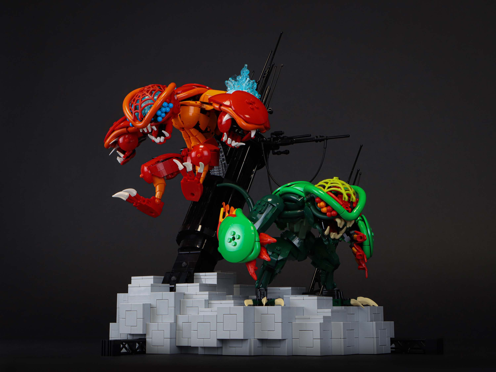
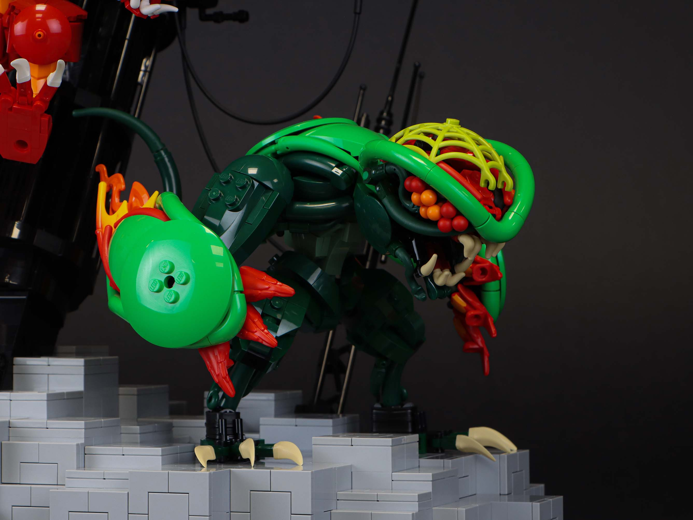
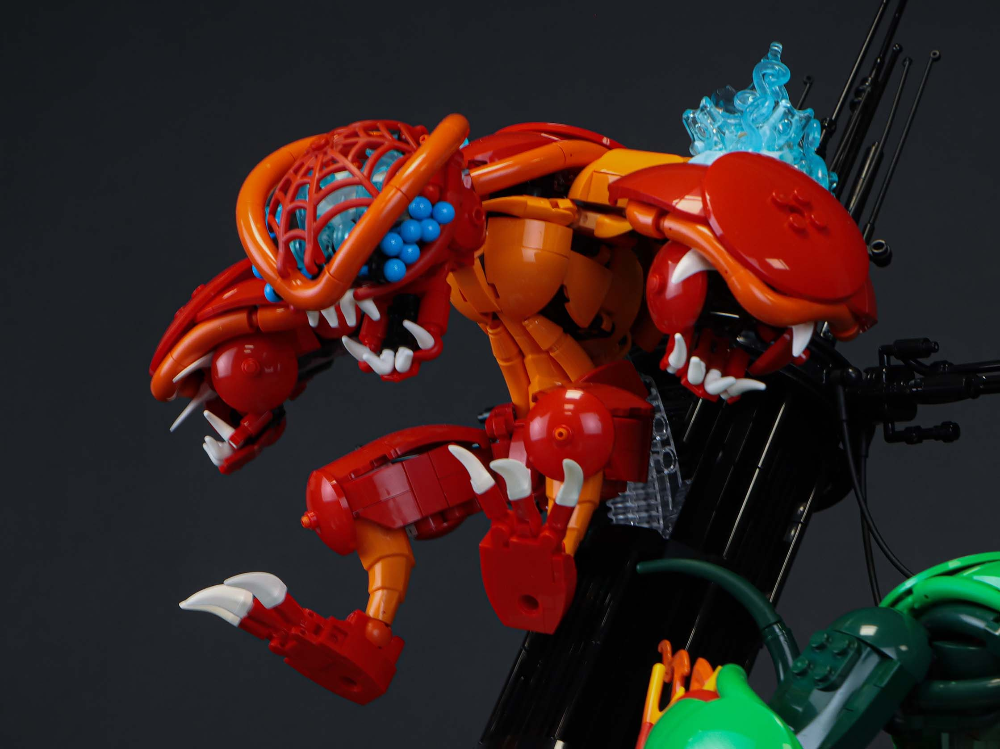
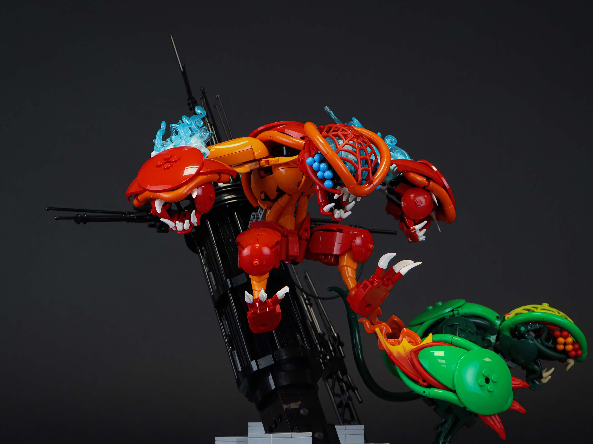
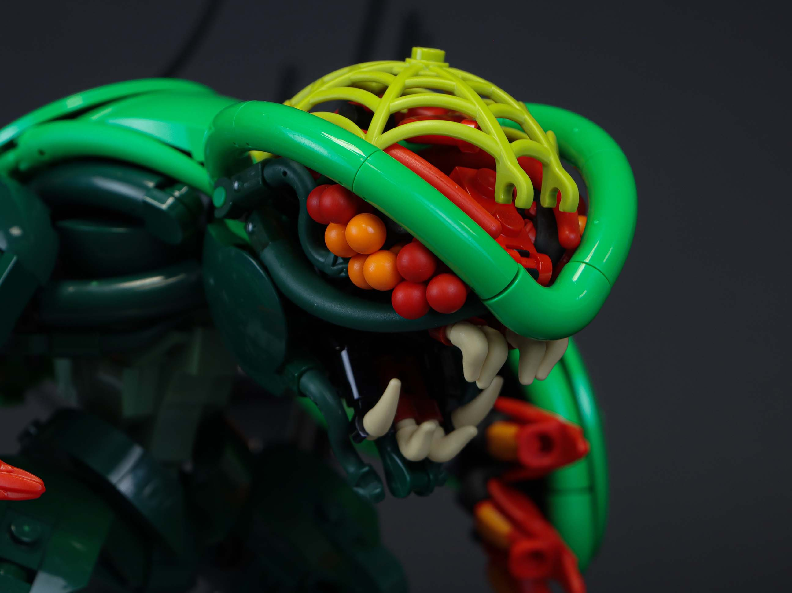
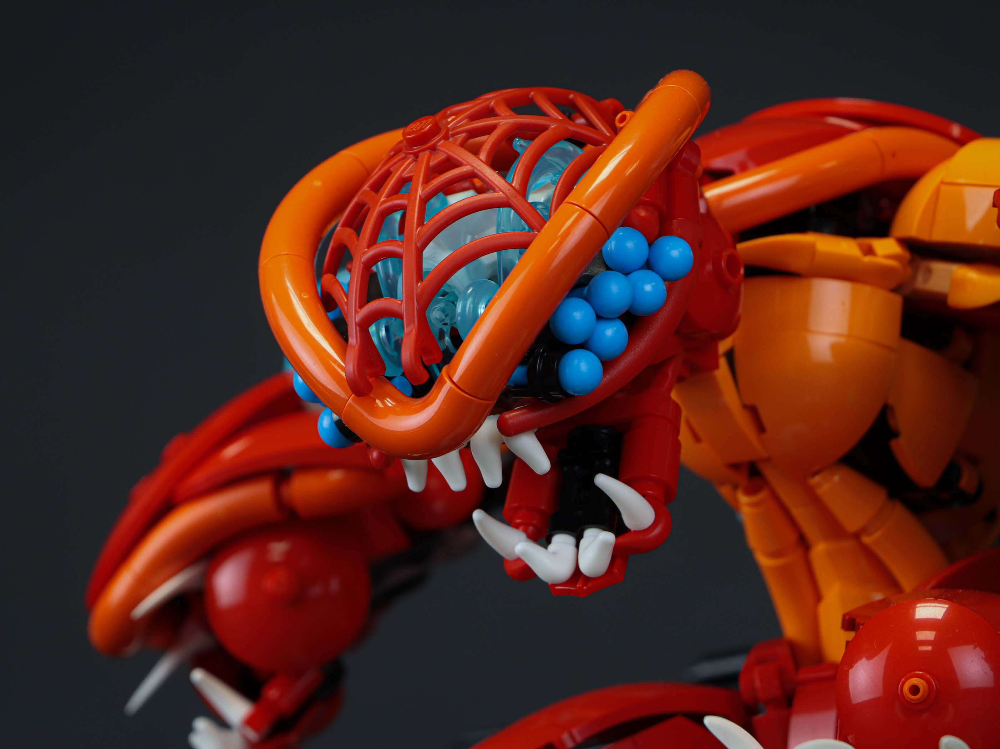
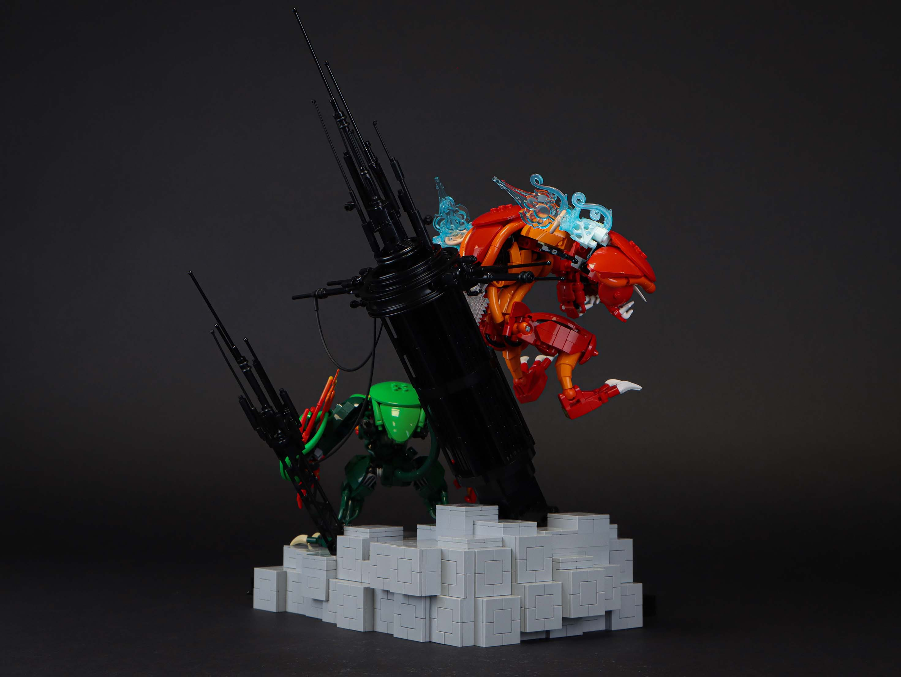

Parasite Reborn

This started with just wanting to make a bright green creature but quickly snowballed into a full on dynamic display. From a composition standpoint, this has been one of the more challenging mocs too as I really wanted the environment to play a role in assisting the creatures and their motion.
the green one (lehvak)

So for those unaware, the creatures in this build are loosely inspired by the bionicle bohrok. I say loosely because I drew inspiration from the general body shapes, but disregarded most of the lore. I just want to make cool creature.
I thought the web piece would make a neat canopy/windscreen for the head, and it's web pattern led me to lean into a more arachnid/insectoid design for the head. The multiple pupils for the eyes, further cemented this idea. The general shape of the original bohrok body, however, doesn't necessarily lend itself to one distinct anatomical reference, as it is also an amalgamation of many creatures. I decided to lean into more reptilian and alien-like designs with the body for this creature; parts like the macaronis and quarter domes help provide a smooth, flowy texture to convey some of these details.
Red and orange shades provide a beautiful contrast to the bright green, so I wanted to lean into that with the claws, especially since the claws/shields were a big part of the original bohrok designs.
the red one (tahnok)

Once I finished Lehvak, I was going to make a base and call it done. However, the idea of, "this would looks so cool if there was a second one" kept circling in my head, and I eventually gave in and built Tahnok. The difference this time, is that I didn't just want it to be in the same pose - I wanted something dynamic. So from the start of this second build, I built the character along a curved action line with the intention that it would be in some sort of elevated pose.
Lehvak had established the design language of the creatures, so many of the anatomical references are copied over. However, that doesn't mean they are the same build as part limitations exist, and I think it'd be boring if it was an exact, color-swapped duplicate. A lot of the details in Tahnok's design are more aggresive than Lehvak, particularly in the energy effects and claw design. The energy effects are more explosive in Tahnok's claws compared to Lehvak's flowy energy. Furthermore, the claw design of Tahnok are extra mouths because I felt that those could further convey emotion over a regular arm design. These aggressive details ultimately aid Tahnok's dynamic, leaping pose.

motion through landscape
The last part of this build, the scenery, was very experimental. As mentioned earlier, I wanted the environment to somehow enhance the characters. First, the style of the environment needed to be determined. I jumped back and forth between many decisions: natural versus sci-fi direction, muted or monochrome color, etc... I eventually landed on the sci-fi direction as this felt more appropriate with the alien-esque design of the creatures, and the monochrome colors to further bring out the creatures. With this direction settled, the design of the stand for Tahnok was the next obstacle. I settled on a design where the lines and direction of the tower follow the motion of Tahnok. The many spires of bars and antennae guide the viewer's eyes around the build. A smaller, perpendicular cluster of antennae point in the direction of Lehvak. Lastly, the blocky base acts as a geometric contrast to the smoothness of the characters.
finale
I started seriously working on this build about 5 months ago, but the head designs for Lehvak date back to about a year. Definitely one of my longer projects, but the result was absolutely worth it. I've wanted to make some sort of dynamic character display, and this satisfied that itch.
Now the big question, will the other bohrok be built? Honestly, I don't have plans to but who knows.


